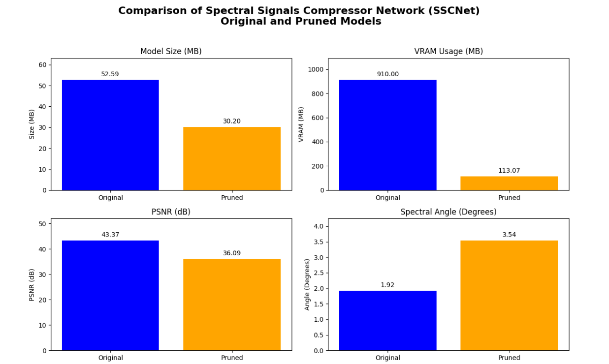

Leveraging Deep Neural Network Compression Techniques for Real-Time Hyperspectral Image Processing in Edge AI
Authors: Dheeraj Kumar
Introduction
Objective
To improve hyperspectral image analysis by integrating SSCNet [1] with the FasterAI [4] compression technique, demonstrating efficiency and performance on the HySpecNet-11k dataset. Hyperspectral imaging provides rich spectral information across numerous bands, supporting applications like remote sensing, agriculture, and medical imaging. However, the high volume and computational demands of hyperspectral data necessitate innovative compression and processing techniques.
Challenges
- Managing large-scale hyperspectral datasets.
- Balancing reconstruction quality and compression efficiency.
Contributions
- Integration of SSCNet with FasterAI pruning for compressing HSI compression model. to reduce model size while preserving high-quality image reconstruction.
- Validated on HySpecNet-11k, a large-scale hyperspectral benchmark dataset.
- Achieved significant reduction in model size and computational load with minor performance trade-offs.
Methodology
Dataset: HySpecNet-11k
HySpecNet-11k [2] is a large-scale hyperspectral dataset containing 11,483 image patches (128×128 pixels with 224 spectral bands) derived from e Environmental Mapping and Analysis Program (EnMAP) satellite data. It is designed for benchmarking learning-based compression and analysis methods.
- Dataset Splits: Training (70%), Validation (20%), Test (10%).
- Preprocessing: Removed water vapor-affected bands, applied normalization, and used both patchwise and tilewise splits.
Model: Spectral Signals Compressor Network (SSCNet)
SSCNet [3] uses 2D convolutions to compress spatial dimensions while preserving spectral integrity.
- Encoder: 2D convolutional layers with parametric ReLU activation and three max-pooling.
- Decoder: Uses transposed convolutions for reconstruction.
- Compression Ratio (CR): Defined by latent channels in bottleneck layer.
FasterAI Pruning Compression Technique
- Remove redundant weights or neurons.
- Fine-tune to recover performance.
- Outcome: Smaller, faster model with minimal accuracy loss.
Experimental Results
- Peak Signal-to-Noise Ratio (PSNR): The pruned SSCNet achieved a PSNR of 36.09 dB, demonstrating strong reconstruction fidelity.
- Spectral Angle (SA): The pruned model maintained a low Spectral Angle deviation of 3.54°, indicating minimal distortion in spectral data.
- Structural Similarity Index (SSIM): The compression model achieved an SSIM of 0.9119 vs. the original Model SSIM is 0.9747, confirming preservation of spatial structures.
- Original images have 16 bpppc and compressed images have 2.53 bpppc.
Model Efficiency
- Model Compression: The pruning process reduced the model size from 52.59 MB to 30.20 MB (a 42.6% reduction) and the number of parameters from 13,783,242 to 7,911,383 (a 42.6% reduction). This highlights the significant decrease in computational overhead and storage requirements.
- VRAM Usage: The pruned model drastically reduced VRAM consumption from 910.00 MB to 113.07 MB, making it highly efficient for deployment on devices with limited GPU resources.
Comparative Analysis
- Performance Superiority: The pruned SSCNet outperformed traditional and learning-based compression methods in terms of computational efficiency and memory usage, while maintaining competitive reconstruction quality.
- Preservation of Fidelity: Despite pruning, the model retained high-quality reconstructions with:
- PSNR ensuring strong pixel-level accuracy.
- SSIM confirming minimal degradation in structural similarity.
- Low spectral angle deviation, validating accurate spectral information preservation.

Conclusion
- Effective reduction in memory footprint and computational demands for real-time edge AI deployment.
- Enables practical deployment of hyperspectral models in resource-constrained environments.
- Supports scalable analysis for large datasets like HySpecNet-11k.
Future Work
- Test FasterAI compression on additional hyperspectral models.
- Explore dynamic pruning strategies.
- Apply other model compression techniques.
References
- [1] M. H. P. Fuchs and B. Demir, “Hyspecnet-11k: A large-scale hyperspectral dataset for benchmarking learning-based hyperspectral image compression methods,” in IGARSS 2023-2023 IEEE International Geoscience and Remote Sensing Symposium, IEEE, 2023, pp. 1779–1782.
- [2] M. H. P. Fuchs and B. Demir, “HySpecNet-11k: A large-scale hyperspectral benchmark dataset.” Dryad, p. 63608947808 bytes, Jun. 26, 2023. doi: 10.5061/DRYAD.FTTDZ08ZH.
- [3] R. La Grassa, C. Re, G. Cremonese, and I. Gallo, “Hyperspectral data compression using fully convolutional autoencoder,” Remote Sensing, vol. 14, no. 10, p. 2472, 2022.
- [4] “FasterAI,” fasterai. Available: https://nathanhubens.github.io/fasterai/
- [5] Fuchs, M. H. P., & Demir, B. (2023). HySpecNet-11k: A Large-Scale Hyperspectral Dataset for Benchmarking Learning-Based Hyperspectral Image Compression Methods. arXiv preprint arXiv:2306.00385v2.